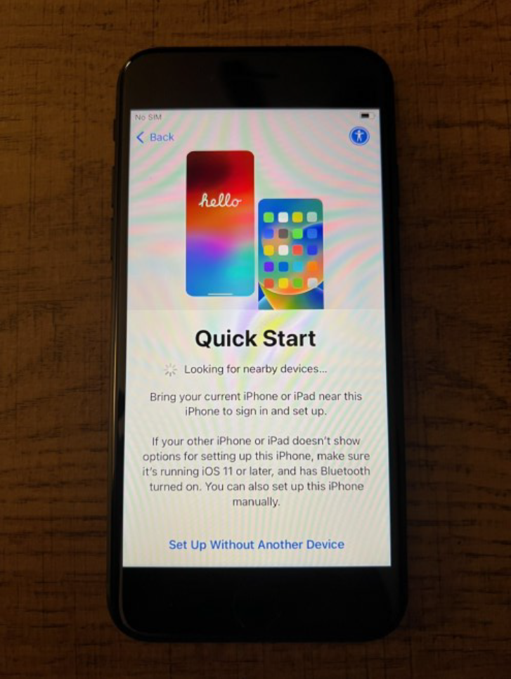
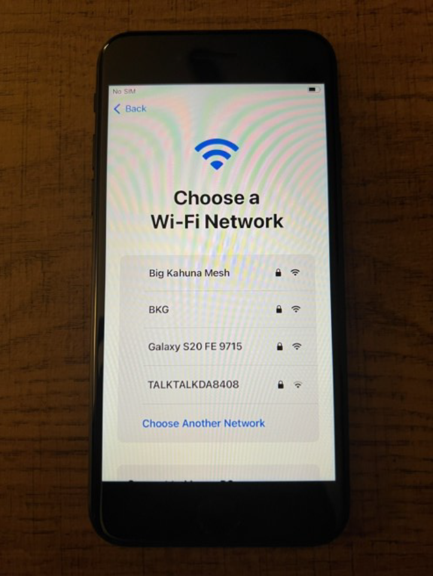

Step 3: Remote Management
At the Remote Management screen, tap “Enroll this iPhone”.

Welcome to your new Salford City Council mobile phone. Follow the steps below to complete your setup:
Insert your SIM card and follow the Quick Start setup. Tap “Set Up Without Another Device”.
Connect to a home or personal Wi-Fi. Do not use SCC WiFi.
At the Remote Management screen, tap “Enroll this iPhone”.
Launch the Company Portal app and sign in using your @salford.gov.uk email.

Choose “SCC Mobile Phones” when asked to select a device category.

Open the Microsoft Defender app and sign in.

Allow Defender to configure VPN. You may be asked for your password to proceed.